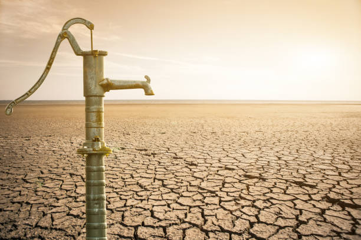
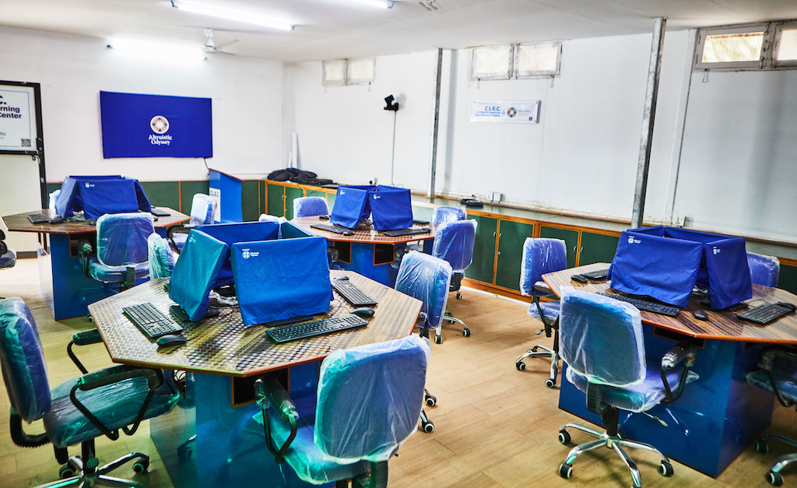

I am a human services professional with a Master of Arts in Global Development and Peace with concentration in conflict analysis. I have worked in the sector of youth empowerment for 5+ years with focus on public safety, persons with disability, and education. I have finessed interpersonal communication, community outreach, team leadership, program management and critical analysis over the years. I strongly believe and advocate ‘right to education for all’, ‘mental health matters’, ‘inclusion of people with disability and LGBTQ+’ in all sectors.
Here are some projects and my work experiences that are milestones in my professional journey.

The thesis is an in-depth investigation and analysis on the relationship between conflict and water crisis.
Water is the ‘petroleum’ of the new era. It is getting scarce everyday with growing population, and the growing demand for it is creating a conflict-zone within and among states. The question lies whether water stress has the potential to spark war, and if water sources have a role to play in escalating and settling conflicts.
The fragile states of the world have a hard time achieving development goals and access to clean drinking water while the non-fragile states have made their way to development. Water scarcity is also mostly seen in war prone, and war affected areas. It is likely that water has a significant role to play in making or breaking of a state. This paper investigates on those aspects of water stress that will clarify the role of water in conflict management.


While at Altruistic Odyssey (AO), I actively worked with the president of the company and coordinated virtually with the AO team in Nepal to accomplish the Computer Learning Environment Center (CLEC) in Shree Prakash Jyoti Higher Secondary School of Nason Rural Municipality in Nepal. The project has been successfully delivered. As a community outreach coordinator, I have been successful to tie up professional links of AO with two organizations that will potentially partner with AO for future CLEC projects.

"Public Safety for All: Fire Safety Sensitization for the Deaf", a fire safety training held for the deaf and people with hard of hearing at Central Higher Secondary School for the Deaf, Kathmandu. The picture above is from the same program that was conducted on the occasion of 28th International Day of People with Disabilities. Leading such programs have added to my skills in team leadership while also training me with domestic fire safety sensitization and evacuation.

The initiation of table talk series. The aim was to raise social issues and discuss how it impacted youth with disabilities, while having professionals from different background in the table talk. The first event focused on the mental health of people with disabilities; the table had participants who practiced nursing, mental health professional, disaster and trauma relief expert and digitalization expert who was also Hard of Hearing.

Working as a Sponsorship Assistant at SOS Children’s Villages Nepal, I was a part of the sponsorship team of the national office that was leading a pilot project of Sponsorship Digital Lab (SPO Lab). I was leading sponsorship departments of three project offices including SOS Children’s Villages Pokhara, SOS Children’s Villages Kavre and SOS Children’s Villages Surkhet. The national office’s team of four would lead training programs in project locations for SPO lab and I was successful to lead trainings for the projects I was responsible for. This is a major accomplishment for me and my team as the pilot project that would have required a year was completed in four months with a massive success.

Nepal Healthcare Equipment Development Foundation (NHEDF) is the biggest milestone in my professional life. My experience here has exposed me to many opportunities to improve my skills that are required to be a leader in human services and youth empowerment. ‘Ek Prayash’ was the biggest successes I have accomplished with the best support from my team. It was a fund raiser event (a theatre show) conducted for the survivors of the massive earthquake of April 2015 in Nepal. The event raised over a hundred thousand Nepali Rupees. .
.jpg)
A 5 kilometer wheelchair race was conducted with the aim to support the earthquake survivors of April 2015, giving the message that disability is not a limitation. Wheelchair users from all over the country participated in support of the cause.